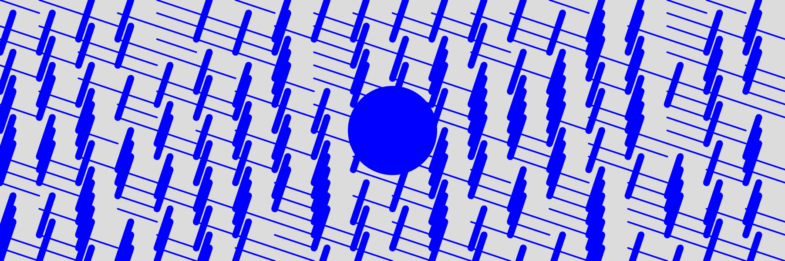
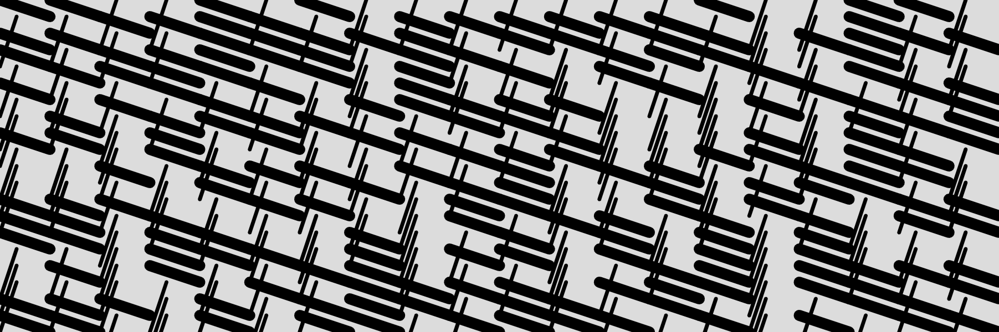
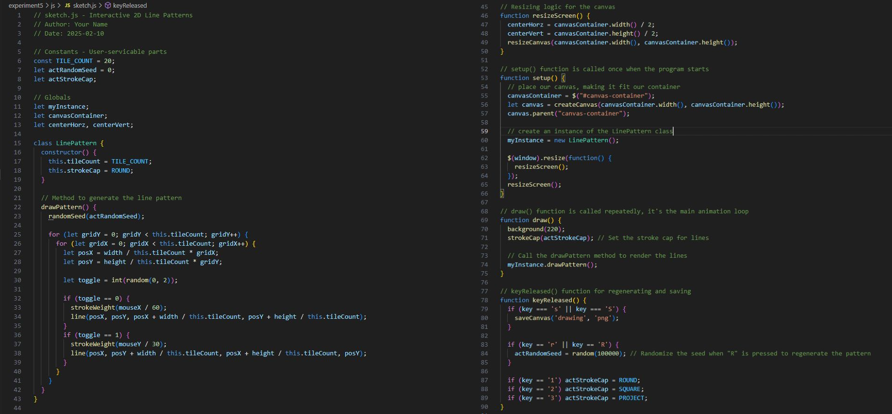
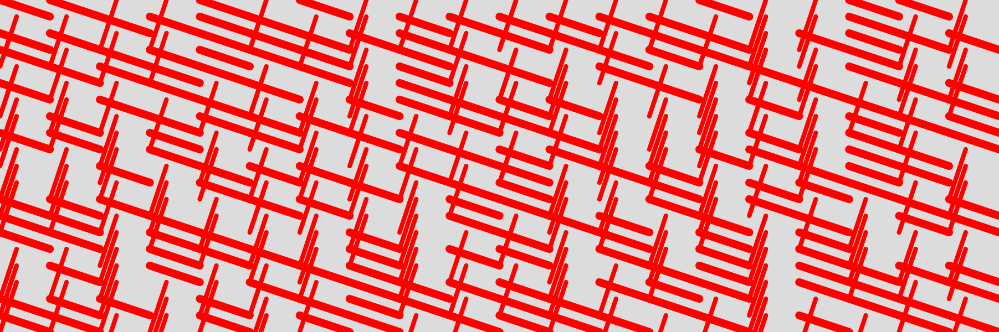
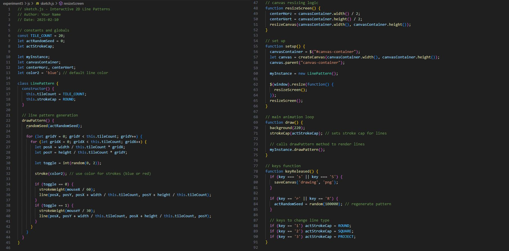
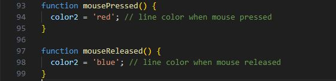
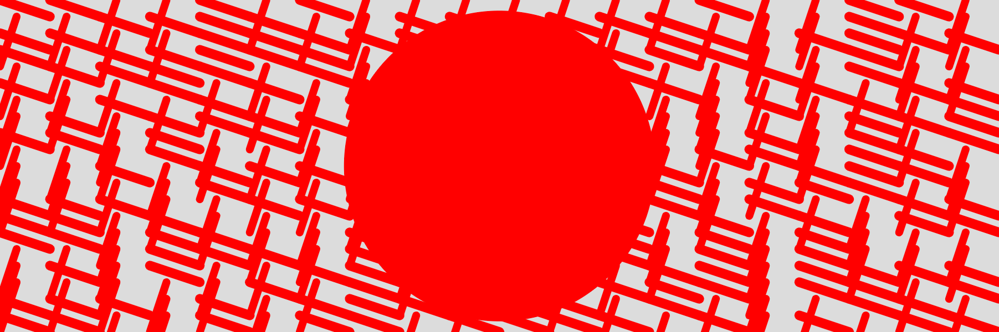
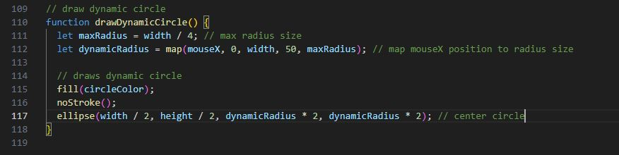

Experiment 5 - 3D Graphics
Use 'S' key to save a png capture.
Use 'R' key to regenerate the line pattern design.
Click/Hold Left-Mouse button to change color of design.
Use '1', '2', '3' keys to change line style.
Description
This experiment has us experiment with 3D graphics such as impossible geometry.
There were other options but impossible geometry is what I'm going to do for this experiment.
This experiment focuses on interacting with the drawing by moving the mouse and the patterns changing based on the corresponding mouse position.
This is my final result

Technical
Imitate
For this project I took inspiration from the design and code of a generative design we were able to choose from for this assignment.
The example I chose from was to generate a pattern and have the mouse position affect the pattern.
I chose to imitate this because the lines changing makes it seem almost 3D-like with walls or something being looked at different angles.
Design Link
Intergrate
To start this project I first implemented my own version of the example design by having my code generate a pattern of lines which will have them change in width and height based on the mouse position.
As you can see the implementation turned out just as I wanted.


Next I wanted to improve the project with something unique so I added this way to change the color based on mouse press.



Innovate
I was quite happy with my integration but it definitely was missing something so to make it more interesting I took from my experiment 2 and implemented a dynamic circle.
In experiment 2 I had used rings that grow and decrease but for this I kept it simple and used a solid circle.
The circle would change colors like the pattern and grow and decrease based on the mouse's X position.


Reflection
This experiment was really easy to do as it was similar to the previous experiments but was quite challenging with making a design that looks 3D when it wasn't.
I'm quite happy with the result as it is both interactive and fulfills the requirements.
The mouse position changing the pattern and circle really doesn't make this effect that makes the design look almost 3D.
I can say this project wasn't too difficult once you get started but thinking of an idea to start was the most challenging and after that I was able to achieve everything I wanted.
I'm quite happy with this experiment.